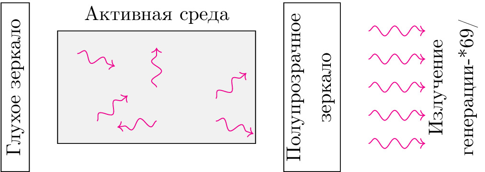

pre.tex
\documentclass[tikz]{standalone}\input{pre.tex}\begin{document}\begin{tikzpicture}
% \xdef\darkness{0}
% \xdef\op{0.1}
% \xdef\SIZE{10}
% \draw[step=1.0,blue,thick,opacity=\op] (0,0) grid (\SIZE,\SIZE);
% \draw[step=0.5,blue,very thin,opacity=\op] (0,0) grid (\SIZE,\SIZE);
% \foreach \i in {0,1,...,\SIZE} {
% \draw[opacity=\op] (0,\i) node [left] {\i};
% \draw[opacity=\op] (\i,0) node [below] {\i};
% }
\draw [fill=white] (0,0) rectangle node[above, rotate=90, yshift=-0.8em] {Глухое зеркало} ++(0.5,3);
\draw [fill=white] (5,0) rectangle node[above, rotate=90, yshift=-1.5em, align=center] {Полупрозрачное \\ зеркало} ++(1,3);
\draw [fill=black!7] (1,0.5) rectangle node[above, yshift=1cm] {Активная среда} (4.5,2.5);
\draw[decorate, magenta, decoration={snake}, ->] (1+0.5*3.5,0.5+0.5*2) -- ++(90:0.7);
\draw[decorate, magenta, decoration={snake}, ->] (1+0.8*3.5,0.5+0.4*2) -- ++(40:0.7);
\draw[decorate, magenta, decoration={snake}, ->] (1+0.2*3.5,0.5+0.2*2) -- ++(40:0.7);
\draw[decorate, magenta, decoration={snake}, ->] (1+0.5*3.5,0.5+0.2*2) -- ++(189:0.7);
\draw[decorate, magenta, decoration={snake}, ->] (1+0.8*3.5,0.5+0.2*2) -- ++(-19:0.7);
\draw[decorate, magenta, decoration={snake}, ->] (1+0.1*3.5,0.5+0.8*2) -- ++(-19:0.7);
\foreach \i in {0.5,1,...,2.5} {
\draw[decorate, magenta, decoration={snake}, ->] (6.5,\i) -- ++(1,0);
}
\node [align=center, rotate=90] () at (8,1.5) {Излучение \\ генерации-*69/};
% \begin{scope}[xshift=-3cm]
% \draw [thick] (0,0) node [left] {$E_1$} -- ++(2,0);
% \draw [thick] (0,2.5) node [left] {$E_2$} -- ++(2,0);
% \draw[fill=black] (1,2.5) circle (5pt);
% \draw [decorate, magenta, decoration={snake}, ->] (0,1.25) --
% node [below,sloped, align=center, scale=0.6, yshift=-4pt]{фотон\\ спонтанного\\ излучения} ++(1,0);
% \end{scope}
% \begin{scope}[xshift=0cm]
% \draw [thick] (0,0) node [left] {$E_1$} -- ++(2,0);
% \draw [thick] (0,2.5) node [left] {$E_2$} -- ++(2,0);
% \draw[thick,->] (1,2.5) -- (1,5pt);
% \draw[dashed, fill=white] (1,2.5) circle (5pt);
% \draw[fill=black] (1,0) circle (5pt);
% \draw [decorate, magenta, decoration={snake}, ->] (0.5,1.25) --
% node [below,sloped]{} ++(1,0);
% \end{scope}
% \begin{scope}[xshift=3cm]
% \draw [thick] (0,0) node [left] {$E_1$} -- ++(2,0);
% \draw [thick] (0,2.5) node [left] {$E_2$} -- ++(2,0);
% % \draw[thick,->] (1,2.5) -- (1,5pt);
% % \draw[dashed, fill=white] (1,2.5) circle (5pt);
% \draw[fill=black] (1,0) circle (5pt);
% \draw [decorate, magenta, decoration={snake}, ->] (1,1.5) --
% node [above,sloped]{} ++(1,0);
% \draw [decorate, magenta, decoration={snake}, ->] (1,1) --
% node [below,sloped]{} ++(1,0);
% \end{scope}
% \node [align=center] () at (-3+1,-1) {Возбужденное \\ состояние атома};
% \node [align=center] () at (3+1,-1) {Основное \\ состояние атома};
% \node [align=center] () at (-3+1,2.5+1) {До эмиссии};
% \node [align=center] () at (0+1,2.5+1) {Эмиссия};
% \node [align=center] () at (3+1,2.5+1) {После эмиссии};
\end{tikzpicture}\end{document}